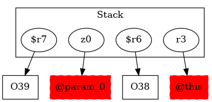

-1 : r3 := @this: Test6
-1 : z0 := @parameter0: boolean
38 : $r6 = new testcase.Test6
38 : specialinvoke $r6.|testcase.Test6: void |init|()|()
39 : $r7 = new testcase.Test6E ->class soot.jimple.internal.JAssignStmt {Left: class soot.jimple.internal.JimpleLocal, Right: class soot.jimple.internal.JNewExpr}
39 : specialinvoke $r7.|testcase.Test6E: void |init|()|()
40 : if z0 == 0 goto virtualinvoke $r6.|testcase.Test6: void test6_1(testcase.Test6)|($r6)
-1 : $r8 = (testcase.Test6) r3
41 : virtualinvoke $r8.|testcase.Test6: void test6_1(testcase.Test6)|($r7)
41 : goto [?= return]
43 : virtualinvoke $r6.|testcase.Test6: void test6_1(testcase.Test6)|($r6)
46 : return
